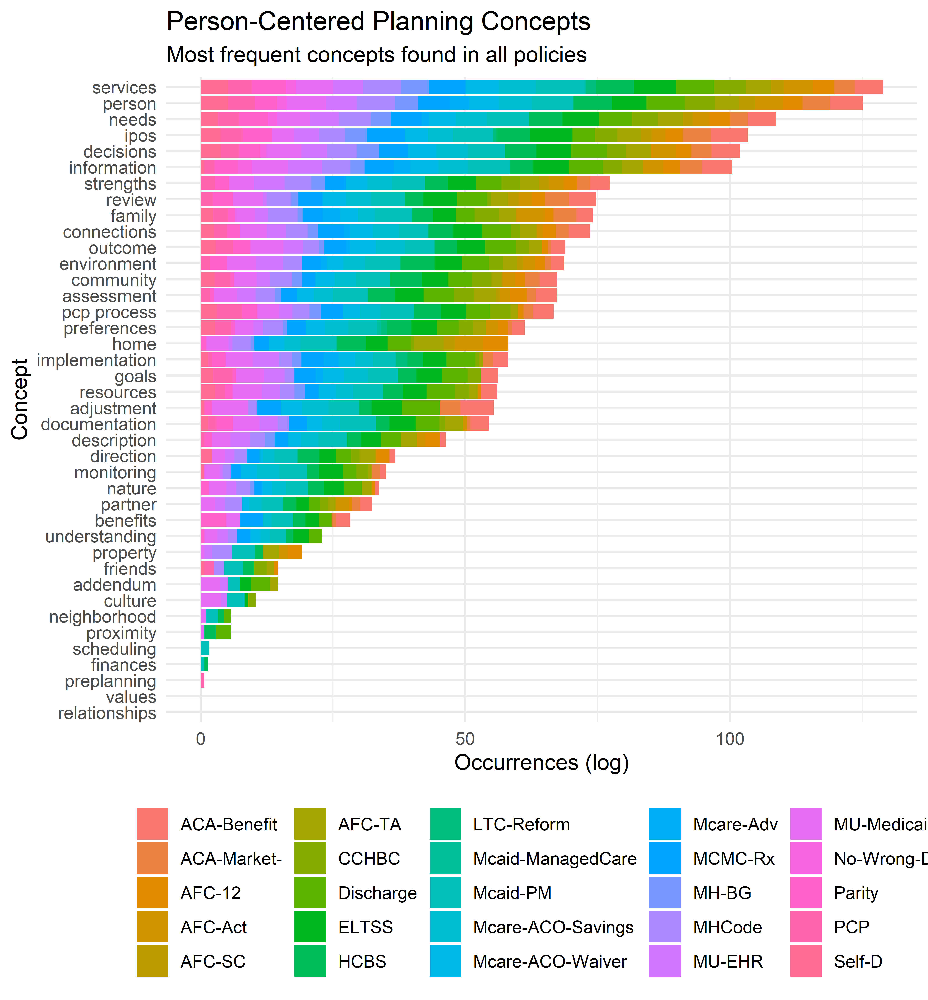

Chapter 4 Comprehensive Mapping to Policy
As with any important idea, person-centered planning has been discussed and debated for decades, leaving a vast body of policy, regulations, guidance, and explanations to sift through. While the basic idea of person-centered planning is simple and commonsense, practitioners are also required to adhere to complex existing policies. With this in mind, the body of knowledge is being developed:
- Based on a broad scope of relevant state and federal policies identified by MDHHS-BHDDA.
- Using natural-language processing techniques to identify and refine core terminology from the text of the identified policies
- In a manner that allows MDHHS-BHDDA to identify whether new federal policies would align with the current implementation of PCP
4.1 Identify Scope of Policy
In collaboration with policy experts at MDHHS-BHDDA, we identified this initial set of state and federal regulations:
| Source | Abbreviated Title | Regulation |
|---|---|---|
| MI-State | Self-D | Self-Determination Policy & Practice … |
| MI-State | PCP | Person-Centered Planning |
| MI-State | MHCode | Mental Health Code |
| MI-State | Mcaid-PM | Medicaid Provider Manual |
| MI-State | AFC-TA | Adult Foster Care Group Homes Technic… |
| MI-State | AFC-SC | Certification of Specialized Programs… |
| MI-State | AFC-Act | AFC Facility Licensing Act 218 of 1979 |
| MI-State | AFC-12 | Licensing Rules for AFC Small Group H… |
| Federal | Parity | Medicaid and Children’s Health Insura… |
| Federal | No-Wrong-Door | Agency Information Collection Activit… |
| Federal | MU-Medicaid | Medicare Program; Hospital Inpatient … |
| Federal | MU-EHR | 2015 Edition Health Information Techn… |
| Federal | MH-BG | Mental Health Block Grants |
| Federal | MCMC-Rx | Medicare and Medicaid Programs; Polic… |
| Federal | Mcare-Adv | Agency Information Collection Activit… |
| Federal | Mcare-ACO-Waiver | Medicare Program; Medicare Shared Sav… |
| Federal | Mcare-ACO-Savings | Medicare Program; Medicare Shared Sav… |
| Federal | Mcaid-ManagedCare | Medicaid and Children’s Health Insura… |
| Federal | LTC-Reform | Medicare and Medicaid Programs; Refor… |
| Federal | HCBS | Medicaid Program; State Plan Home and… |
| Federal | ELTSS | Medicaid and Children’s Health Insura… |
| Federal | Discharge | Medicare Program; Hospital Inpatient … |
| Federal | CCHBC | CCHBC Requirements |
| Federal | ACA-Market- | Patient Protection and Affordable Car… |
| Federal | ACA-Benefit | Patient Protection and Affordable Car… |
This set of policies and regulations can be expanded as necessary.17 Additional work will be needed to assure that the most current version of amended policies is used, as this approach is refined.
4.2 Find Occurrence of Concepts in Policy
The core concepts are derived from key policy documents, as defined in the previous section, which allows for related terms to be flagged within other policy documents. One of the most challenging issues facing any attempt to give clear, consistent, and comprehensive guidance related to person-centered planning is the large, diverse, and continually evolving set of requirements and guidance.
The previous section outlined the process for deriving key concepts from state-level policies and guidelines. The next step is to identify these concepts when they occur within a much larger set of federal policies. This will allow for policy specialists to:
- suggest necessary refinements to the body of knowledge
- identify relevant requirements which were previously unknown
- identify potential discrepancies between policies which address a similar concept
To do this, this analysis maps policy words and phrases with their corresponding concepts. As new policies are identified for inclusion, new synonyms for core concepts will need to be identified if new terms are introduced to refer to existing concepts.
The plot below shows the number of occurrences18 of core concepts across the entire corpus of policies identified above. While the frequency of occurrence does not speak to the importance of one concept in relationship to others, it point out the number of uses of the concept in different contexts, underlining the challenge in harmonizing divergent policy language.

An example may be helpful in understanding what goes into the chart above. For instance, the concept of assessment shown in the chart above occurs 1835 times across 22 separate policy documents.19
The table below shows a sample of the text from some of the policies where this concept is flagged:
| doc_id | text | sid |
|---|---|---|
| AFC-TA | Resident admission criteria ; resident assessment plan ; emergency admission ; resident care agreement ; physician ’s instructions ; health care appraisal ( //) R. Resident admission and discharge policy ; house rules ; emergency discharge ; change of residency ; restricting resident ’s ability to make living // STATE OF MICHIGAN Department of Licensing and Regulatory Affairs of ADULT FOSTER CARE GROUP HOME TECHNICAL ASSISTANCE MANUAL arrangements prohibited ; provision of resident records at time of discharge ( //) R. Resident care ; licensee responsibilities ( / / ) . | 11 |
| AFC-TA | ( d ) " Assessment plan " means a written statement which is prepared in cooperation with a responsible agency or person and which identifies the specific care and maintenance , services , and resident activities appropriate for each individual resident ’s physical and behavioral needs and wellbeing and the methods of providing the care and services , taking into account the preferences and competency of the individual . | 55 |
| AFC-TA | Assist with the completion of a written assessment plan at the time of admission and review with the licensee at least annually . | 71 |
| AFC-TA | [ ] ( j ) " Health care appraisal " means a licensed physician ’s , licensed physician ’s assistant ’s , or registered nurse ’s statement that provides an assessment of the general physical condition of a resident . | 114 |
| AFC-TA | // STATE OF MICHIGAN Department of Licensing and Regulatory Affairs of ADULT FOSTER CARE GROUP HOME TECHNICAL ASSISTANCE MANUAL ( i ) Assessment planning and the establishment of an IPOS . | 173 |
| AFC-TA | ( c ) Be capable of assuring program planning , development , and implementation of services to residents consistent with the home ’s program statement and in accordance with the resident ’s assessment plan and care agreement . () | 369 |
| AFC-TA | The consultant is to determine that the licensee has a training methodology in place that assures that all direct care staff are competent in providing the personal care , supervision and protection as identified in the facility ’s program statement and admission / discharge policy as well as the individual assessment plans , health care appraisals and resident care agreements . | 445 |
| AFC-TA | This can be accomplished by TB testing , x - ray , screening , an assessment or physical exam completed by the person ’s physician or local health authority . | 471 |
| AFC-TA | The home health aide can not be counted when determining the adequacy of on duty direct care staff that are required in the home in order to provide the services specified by the home ’s resident assessments and resident care agreements or in determining the minimally required resident to staff ratio . () | 488 |
| AFC-TA | A licensee shall have sufficient direct care staff on duty at all times for the supervision , personal care , and protection of residents and to provide the services specified in the resident ’s resident care agreement and assessment plan . | 489 |
| AFC-TA | For purposes of this rule " Sufficient direct care staff " is defined to mean the number of staff necessary to implement the care needs as indicated in the resident ’s assessment plan , health care appraisal , and resident care agreement . | 491 |
| AFC-TA | Resident assessment plans g . | 499 |
| AFC-TA | Resident admission criteria ; resident assessment plan ; emergency admission ; resident care agreement ; physician ’s instructions ; health care appraisal . | 641 |
| AFC-TA | // STATE OF MICHIGAN Department of Licensing and Regulatory Affairs of ADULT FOSTER CARE GROUP HOME TECHNICAL ASSISTANCE MANUAL Technical Assistance Continuous nursing care is defined as requiring a nurse ’s presence to provide ongoing nursing assessments , judgments and / or interventions . | 645 |
| AFC-TA | A licensee shall not accept or retain a resident for care unless and until the licensee has completed a written assessment of the resident and determined that the resident is suitable pursuant to all of the following provisions : Technical Assistance | 648 |
| HCBS | This commenter urged CMS to ensure that individuals have assessments of need to ensure they are not placed in the wrong settings . | 293 |
| HCBS | Sections ( c ) , ( i ) and ( k ) of the Act all require that individuals have an individual assessment of needs that includes the individual ’s needs , strengths , preferences and goals for servicesupport provided under the respective authorities . | 294 |
| HCBS | While we understand that there may be circumstances in which an individual ’s needs require a different level of service , we expect that the assessment of functional need , the person - centered plan and the availability of HCBS will be able to address an individual ’s changing needs . | 378 |
| HCBS | One commenter supports the regulation , but believes the rule should go further and require living units to have access to food storage and preparation space ( with the caveat that stoves or microwaves could be removed if the assessment documented that it would be a danger because of the resident ’s cognitive impairment ) . | 529 |
| HCBS | This review will also include assessment of how the settings allow for full integration into the broader community . | 663 |
| HCBS | States are responsible for determining the provider qualifications of the entities who will conduct the assessments and PCP process as long as the requirements in the final regulations have been met . | 968 |
| HCBS | The regulation already specifies the involvement of an individual ’s representative in the evaluation of eligibility ( . ) , independent assessment ( . ) , and person - centered service plan ( . ) . | 996 |
| HCBS | Several commenters asked how frequently the assessment must be made if the condition causing the modification of the " additional conditions " was not likely to improve . | 1020 |
| HCBS | We also state in the rule that reviews and any needed revision of the independent assessment and the person - centered service plan , must occur at least every months , when the individual ’s circumstances or needs change significantly , and at the request of the individual . | 1023 |
| HCBS | While ( i ) ( ) ( F ) ( i ) requires that the independent assessment include an objective evaluation of an individual ’s inability or need for assistance to perform or more ADLs , this is only a suggested element at ( i ) ( ) ( D ) ( i ) and thus , not required for an individual to be determined eligible for ( i ) State plan HCBS . | 1165 |
| HCBS | This suggestion is already captured in . ( a ) ( ) where the regulation requires the assessment to " … include the opportunity for the individual to identify other persons to be consulted , such as , but not limited to , the individual ’s spouse , family , A couple of commenters stressed the importance that FFP be available for evaluations even when an individual is subsequently found ineligible for section ( i ) of the Act services . | 1169 |
| HCBS | As stated in section III.N .. of the preamble to the proposed rule , FFP is available for evaluation and assessment as administration of the approved state plan prior to an individual ’s determination of eligibility for and receipt of other section ( i ) of the Act services . | 1170 |
| HCBS | If the individual is found not eligible for the State plan HCBS benefit , the state may claim the evaluation and assessment as administration , even though the individual would not be considered to have participated in the benefit for purposes of determining the annual number of individuals served by the benefit . | 1171 |
| HCBS | Some commenters requested clarification regarding level of need , as defined by the state and provider , including whether a state may leverage existing and / or specific instruments that are used to determine HCBS waiver eligibility in order to determine whether a beneficiary meets the State plan HCBS needs assessment criteria for participation , understanding that the State plan HCBS benefit eligibility criteria must be less stringent than that used for HCBS waiver programs . | 1172 |
| HCBS | One commenter indicated that if states establish needs - based criteria for each specific service that an individual receives , it would add to the complexity of the assessment service planning , the overall costs of program administration , and potential beneficiary and family caregiver confusion . | 1175 |
| MHCode | () " Incapacitated " means that an individual , as a result of the use of alcohol or other drugs , is unconscious or has his or her mental or physical functioning so impaired that he or she either poses an immediate and substantial danger to his or her own health and safety or is endangering the health and safety of the public . () " IPOS " or " plan of services " means a written IPOS developed with a recipient as required by section . () " Intellectual disability " means a condition manifesting before the age of years that is characterized by significantly subaverage intellectual functioning and related limitations in or more adaptive skills and that is diagnosed based on the following assumptions : ( a ) Valid assessment considers cultural and linguistic diversity , as well as differences in communication and behavioral factors . | 107 |
| MHCode | ( d ) Submit to the members of the house and senate standing committees and appropriation subcommittees with legislative oversight of mental health matters an annual report summarizing its assessment of the mental health needs of the state and incorporating information received from CMH service s programs under section . | 286 |
| MHCode | The record shall contain at a minimum a written assessment and IPOS for the patient , a statement of the purpose of hospitalization or treatment , a description of any tests and examinations performed , and a description of any observations made and treatments provided . | 569 |
| MHCode | ( c ) Sample assessments of families receiving family support subsidy payments including adequacy of subsidy and need for services not available . | 792 |
| MHCode | The office shall do all of the following : ( a ) Assess the mental health needs of multicultural populations in the state . | 828 |
| MHCode | ( b ) Identification , assessment , and diagnosis to determine the specific needs of the recipient and to develop an IPOS . | 1018 |
| MHCode | ( h ) Screening and assessment procedures . | 1055 |
| MHCode | Sec . () The board of a CMH services program shall do all of the following : ( a ) Annually conduct a needs assessment to determine the mental health needs of the residents of the county or counties it represents and identify public and nonpublic services necessary to meet those needs . | 1218 |
| MHCode | It is the responsibility of the CMH services program to involve the public and private providers of mental health services located in the county or counties served by the CMH program in this assessment and service identification process . | 1220 |
| MHCode | The needs assessment shall include information gathered from all appropriate sources , including CMH waiting list data and school districts providing special education services . | 1221 |
| MHCode | ( b ) Annually review and submit to the department a needs assessment report , annual plan , and request for new funds for the CMH services program . | 1222 |
| MHCode | The standard format and documentation of the needs assessment , annual plan , and request for new funds shall be specified by the department . | 1223 |
| MHCode | ( c ) In the case of a county CMH agency , obtain approval of its needs assessment , annual plan and budget , and request for new funds from the board of commissioners of each participating county before submission of the plan to the department . | 1224 |
| MHCode | In the case of a CMH organization , provide a copy of its needs assessment , annual plan , request for new funds , and any other document specified in accordance with the terms and conditions of the organization ’s inter- local agreement to the board of commissioners of each county creating the organization . | 1225 |
| MHCode | In the case of a CMH authority , provide a copy of its needs assessment , annual plan , and request for new funds to the board of commissioners of each county creating the authority . | 1226 |
For example, using the Federal Register API to search for policies containing the phrase “person-centered” by relevant agencies.↩
using log scale to show the less frequently used terms↩
The specific policies including this concept are: ACA-Benefit, ACA-Market-, AFC-12, AFC-Act, AFC-SC, AFC-TA, CCHBC, Discharge, ELTSS, HCBS, Mcaid-PM, Mcare-ACO-Savings, Mcare-ACO-Waiver, Mcare-Adv, MCMC-Rx, MH-BG, MHCode, MU-EHR, MU-Medicaid, No-Wrong-Door, Parity, PCP↩